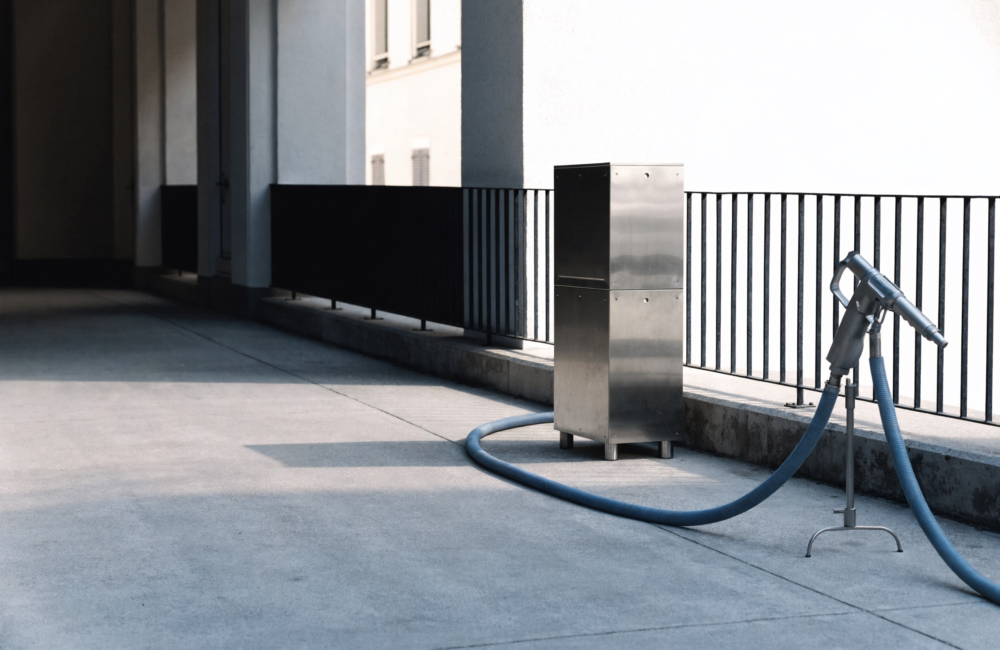

Débouchage & assainissement d'urgence à Paris 15e
Allo Sanitaire Express déboucle vos canalisations, WC et évacuations et réalise vos travaux d'hydrocurage et de curage. Une équipe locale disponible 24h/24, un diagnostic honnête et un tarif annoncé avant l'intervention.
- Devis clair avant travaux
- Intervention 24h/24, 7j/7
- Matériel pro & caméra

Disponibles 24h/24
Une urgence la nuit, le week-end ou un jour férié ? Nous répondons et intervenons sans attendre.
Arrivée rapide
Basés rue Lecourbe dans le 15e, nous sommes chez vous en peu de temps sur Paris et la proche banlieue.
Tarif annoncé
Le prix est communiqué avant le début des travaux. Pas de surprise sur la facture finale.
Travail garanti
Inspection caméra, débouchage durable et conseils d'entretien pour éviter la récidive.
Tout l'assainissement, par des professionnels du sanitaire
Du simple bouchon de lavabo au curage complet d'un réseau d'évacuation, nous traitons chaque problème avec le bon outil et la bonne méthode.
Débouchage de canalisation
Éviers, lavabos, douches, baignoires, colonnes d'eaux usées : on localise et on supprime le bouchon.
En savoir plus 02Débouchage WC & sanitaires
Toilettes engorgées, chasse qui déborde, sanitaires bloqués : intervention propre et rapide.
En savoir plus 03Hydrocurage & curage
Nettoyage haute pression des canalisations et réseaux pour un débit retrouvé en profondeur.
En savoir plus 04Urgence 24h/24
Refoulement, inondation, dégât des eaux : nous prenons en charge l'urgence à toute heure.
En savoir plus 05Inspection caméra
Caméra d'inspection pour localiser précisément la cause d'un engorgement répété.
En savoir plus 06Particuliers & pros
Logements, copropriétés, commerces, restaurants : nous adaptons l'intervention à votre site.
Voir tous les services
Un travail propre, mesuré et durable
Nous ne nous contentons pas de débloquer dans l'urgence : nous traitons la cause. Inspection, débouchage adapté, puis vérification du bon écoulement avant de partir.
- Furet électrique, pompe haute pression et caméra d'inspection.
- Protection de votre logement et nettoyage de la zone après travaux.
- Compte rendu clair de l'intervention et conseils d'entretien.
- Devis détaillé pour les chantiers de curage ou de réhabilitation.
Une entreprise locale qui tient ses engagements
Allo Sanitaire Express est une équipe de proximité, installée au cœur du 15e arrondissement. Notre réputation se construit chantier après chantier.
Réactivité réelle
Un interlocuteur qui décroche et une intervention planifiée immédiatement.
Prix transparents
Tarifs clairs, devis gratuit et facture conforme à ce qui a été annoncé.
Techniciens qualifiés
Des professionnels formés, équipés et respectueux de votre logement.
Résultat garanti
Nous vérifions l'écoulement et intervenons à nouveau si le bouchon revient.
Quatre étapes, zéro mauvaise surprise
Votre appel
Vous nous décrivez le problème au 07 66 32 57 13. On évalue l'urgence et on convient d'un créneau, souvent dans la journée.
Diagnostic sur place
Notre technicien identifie la cause exacte de l'engorgement, au besoin avec une inspection caméra, et vous annonce le tarif.
Intervention
Débouchage, hydrocurage ou curage avec le matériel adapté. Nous protégeons votre intérieur et nettoyons la zone.
Vérification
Contrôle de l'écoulement, conseils d'entretien et facture conforme au devis. Vous validez avant notre départ.
*Délai indicatif sur Paris et proche banlieue, selon la circulation et la disponibilité des équipes.
Paris 15e et toute l'Île-de-France
Implantés rue Lecourbe, nous couvrons l'ensemble des arrondissements parisiens et les départements limitrophes.
Vous vous demandez sûrement…
Une question qui n'est pas listée ? Appelez-nous, nous répondons clairement avant toute intervention.
Poser ma question au 07 66 32 57 13Intervenez-vous vraiment 24h/24 ?
Oui. Notre service de débouchage et d'assainissement d'urgence fonctionne jour et nuit, week-ends et jours fériés compris, sur Paris 15e et l'Île-de-France.
Le devis est-il gratuit ?
Le diagnostic et le devis sont gratuits et sans engagement. Le tarif vous est communiqué avant le début des travaux : vous décidez en toute connaissance de cause.
Quel est le délai d'intervention ?
Sur Paris et la proche banlieue, nous visons une arrivée rapide, souvent en moins d'une heure selon la circulation. Pour les urgences, nous priorisons votre demande.
Travaillez-vous pour les copropriétés et les pros ?
Oui, nous intervenons pour les particuliers, les copropriétés, les syndics, les commerces et les restaurants, avec un matériel adapté à chaque type de réseau.
Que faire en attendant votre arrivée ?
Coupez l'eau si vous constatez un refoulement, évitez d'utiliser l'évacuation concernée et dégagez l'accès au point bouché. Nous vous guidons par téléphone au besoin.
Des clients rassurés, un travail bien fait
« WC bouché un dimanche soir, ils sont venus en moins d'une heure. Tarif annoncé respecté, travail propre. »
Camille R.Paris 15e
« Hydrocurage des canalisations de notre immeuble. Équipe sérieuse, explications claires, débit nickel depuis. »
Syndic — résidence 14eParis 14e
« Évier de cuisine totalement bouché. Diagnostic caméra, problème réglé en une visite. Je recommande. »
Thomas L.Issy-les-Moulineaux
Une canalisation bouchée ? Ne laissez pas la situation s'aggraver.
Appelez Allo Sanitaire Express : diagnostic immédiat, tarif annoncé, intervention rapide à Paris 15e et en Île-de-France.